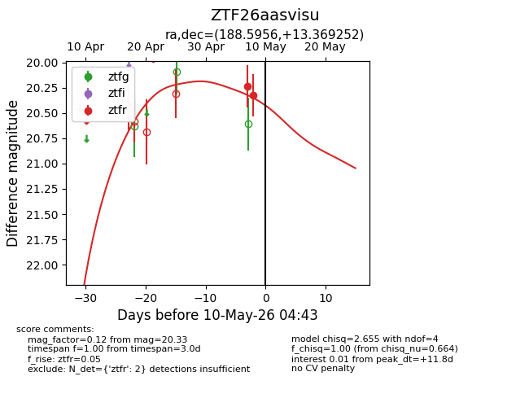
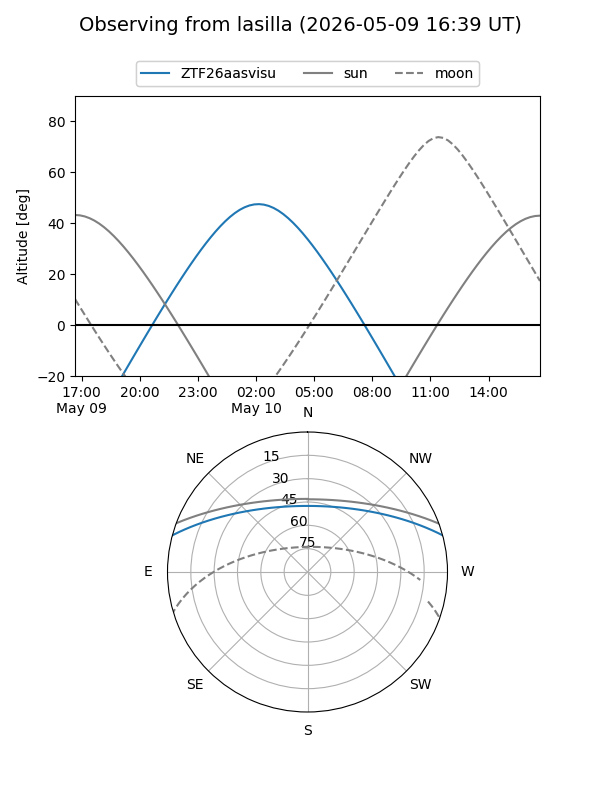
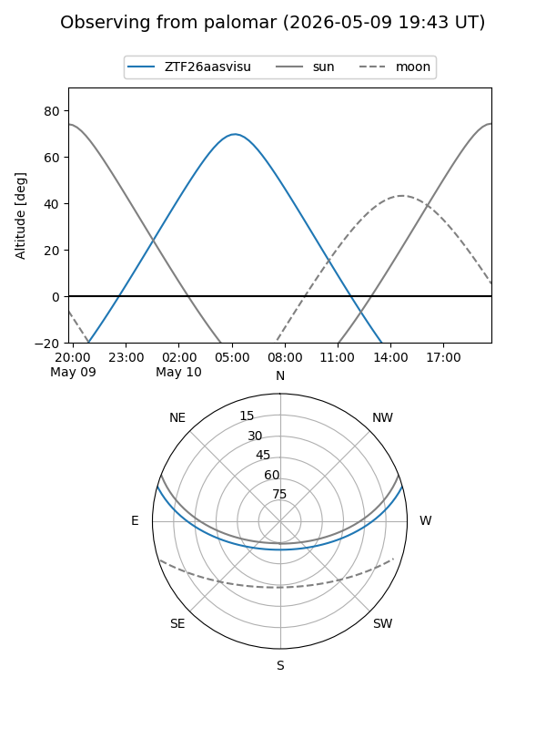
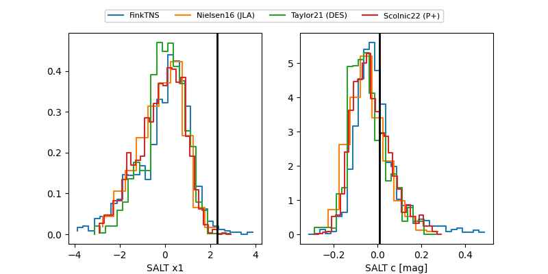

ZTF26aasvisu
Target ZTF26aasvisu at 2026-05-10 04:44
Aliases and brokers:
FINK: link
Lasair: link
ALeRCE: link
alt names
ZTF26aasvisu (ztf,fink_ztf)
Coordinates:
equatorial (ra, dec) = 188.5956,+13.36925
equatorial (HMS+DMS) = 12:34:22.94,+13:22:09.31
galactic (l, b) = (285.9328,+75.67507)
Flags:
Photometry:
last ztfr=20.33
2 ztfr detections
Lightcurve

Visibility


Additional plots
